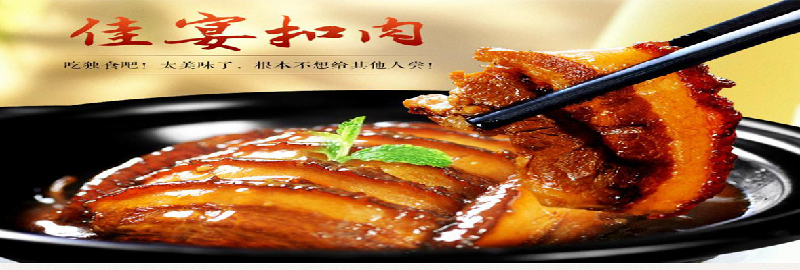
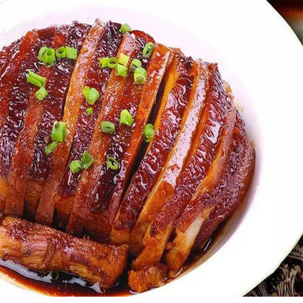
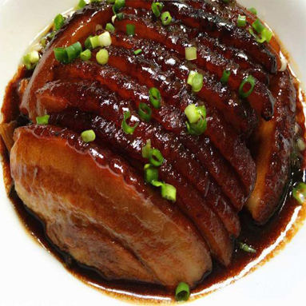
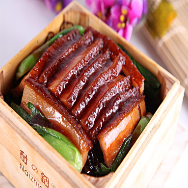

|  |
扣肉是一道用猪肉制成的，常见的中国菜肴，扣肉罐头也是一种常见的罐装食品。扣肉的“扣”是指当肉蒸或炖至熟透后，倒盖于碗盘中的过程。 |
| ⊙这个好上头啊 | ||
| 据说它与盐焗鸡、酿豆腐同时被称为“梅州三件宝”“梅菜扣肉”精选横沥土桥梅菜芯，在清水中浸泡至爽口、淡口，把梅菜切成若干段备用，选五花肉，将五花肉皮刮干净，上汤锅煮透捞出，趁热在皮上上一层老抽，皮向下，入烧热的花生油锅里炸，炸上色捞出，放净水盆内泡软，然后切成三至四毫米厚的大肉片，洗干净锅注入花生油，下葱、姜、蒜、八角末炒出味后，放了五花肉炒片刻，然后再下汤、白酒、盐、生抽、白糖，待汤开后，挪到小火上去，一直焖烂为止。然后把烧好的五花肉拿出来，逐件将肉（有皮的在底）平整地放了碗里，上面铺上一层梅菜段，再倒入原汤，上笼蒸透。走菜时滗出原汤，把肉反转扣在盘中，原汤尝好味烧开，用水淀粉勾芡，浇在肉上即可。这道菜的特点是：肉烂味香，吃起来咸中略带甜味，肥而不腻。
|
||
|  |  |  |